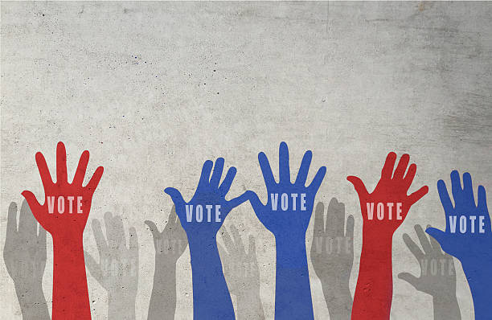

Presenting…My Election Model!
Last updated November 2, 2020
There are a lot of election models out there - the Economist, FiveThirtyEight, and the Cook Political Report to name a few. So what am I doing here?

The Problem
Honestly, I was irritated in blindly trusting other’s models. Many election model builders claim to use demographic patterns, previous election results, economic considerations, polls, etc.. But, beside polling numbers, what data exactly are they using and where does it come from? Also, what do their models actually look like? Ideally, I would want enough information to recreate the model myself to see what they actually did, but that information isn’t available. I understand that model-builders may not want to be undermined and critiqued by skeptics where their work may lose credibility to egotistic data lords or others, but even-so I would appreciate more transparency (especially after the 2016 election). Also, I understand that the data that are used may be sensitive information they pay for which is more understandable.
What I did
My goal was to create a model that is based exclusively on recent quality polling, and that’s it! No mysterious variables thrown into already complex models; no sensitive consumer data that feels like violations of privacy; and, no blindly trusting an invisible methodology where you can’t possibly recreate the model. These probabilities are calculated SOLELY from an average of the five latest, quality polls in each state. Here is my methodology and code. Overall, the purpose is to give an educated guess of what would happen if the election were held each week (I plan to update this each day until the election). I mostly did this for an easy way to keep track of the recent polls and pulse check the election map looks at a moments notice.
I present the Presidential Pulse Checker
Latest probabilities: (BEST VIEWING ON DESKTOP. If you are on a mobile device, press on states for more info; otherwise, hover.)
If there were 100 presidential elections today in 100 different worlds like ours, how many would Trump/Biden win?
Daily Tracker: (Percentage of daily simulations won plotted over time; hover for more info)
Links to polling aggregators: FiveThirtyEight, RealClearPolitics.
Thanks for viewing this post. Check back soon for more updates:)